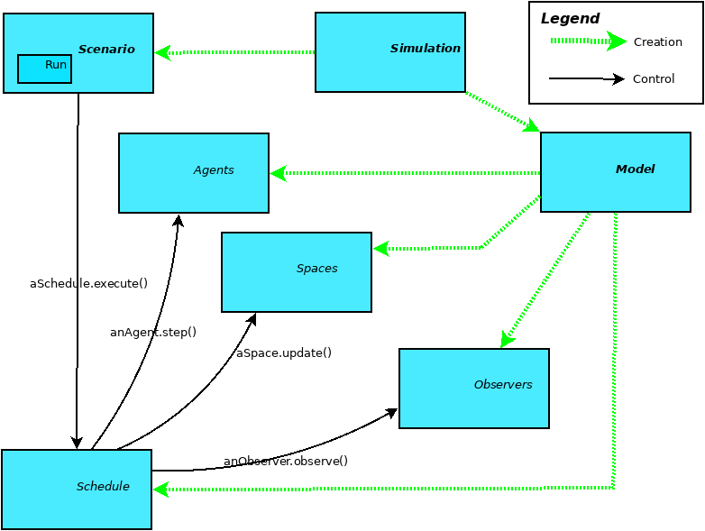
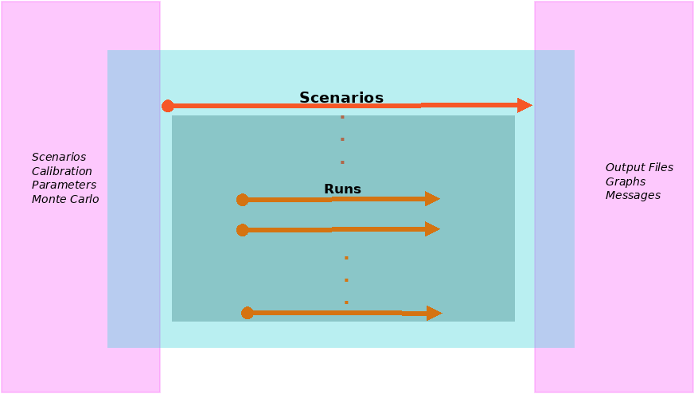

Kernel Main Features¶

MVC and Dependency Injection¶
The implementation is based in two design principles:
- MVC (Model-View-Control) - We separate the model and view componentes in the implementation. The modules: model, basicAgents, basicSpaces, etc, are the model part of the framework. The modules Simulation and BasicSchedule are responsible for the control component and the modules Interface and BasicObserver are responsible for the view part.
- Dependency Injection - Is used to create the objects in the model. The Agents, the Spaces, the Observers and the Schedule are all created using a json file. This file also contains all the necessary information for the initialization of the model, like, the number of agents of each type, the spaces, the intialization of the variables of the agents, the variables that will be observed, etc. The idea is to flexibilize the construcion of scenarios and models based in the same set of classes. These classes can be initialized using the information contained in the json file and we can define each scenario initialization in this file.
Creating a Model¶
The creation of a model is done in the models folder, in the Ecos_p or in other folder depending on the modeller preferences. The paths to the kernel and model, are defined in a model_config.json in the model folder.
A model is composed of three modules:
- The agents module (that can be specialised using submodules) - that contains the definitions of the agents, its variables (compatible with the json file of the definition of the agents) and its behaviour, defined in a method named step. The step method is called by a schedule object that controls the execution of the agent step, the space updades and the observers observation method. An agent in a discrete event simulation is a subclass of DiscreteEventAgent
- The action_set module - that contains the agents actions, the idea behind to separate the agents actions and behavior is that one can implement multiple action sets for new methods representing actions of the agent without interference in the agent code.
- The Space module - that contains the model spaces. The spaces are the way the agents interact. In a canonical simulation model the agents send a message to a space, and this space updates the information for the agents an treat the interactions between the agents in the method update that in executed by the schedule, after the execution of the agent steps.
Executing a Simulation¶
To execute a simulation using a bash file (there are bash files to execute the simulation in the examples) you can just execute the following command in a shell window (using the iterated prisioners’ dillema model) directly in the example folder (../examples/ipd_model):
$ ./ipd.sh
This command will execute the following file (ipd.sh):
rm runs/*.csv
cd ../../kernel
python3 main.py ../examples/ipd_model/ ipd_model_config.json ipd.json
cd ../examples/ipd_model
Rscript -e 'rmarkdown::render("ipd.Rmd", output_format="html_document", output_dir="results")'
The script will:
- erase the csv files from previous simulations of the model;
- change the folder for the kernel (to execute the file main.py)
- Execute the simulation (the main.py file with the configuration files for the model)
- Change the folder again for the model (../examples/ipd_model)
- Execute an R script to show the results
The simulation module¶
When the simulation script is executed, the main.py file creates a Simulation Object this object creates the two other main simulation objects, the Model and the Scenario. These objects are created from the definitions existing in the json simulation file (as well all the other objects in the simulation).
Graphical Representation of the objects in a simulation
The model module¶
The Model object is responsible for the model part of the simulation. It creates the Schedule, the Agents, the Spaces and the observers. Then, the model leads the control to the Scenario, that will have the information for the initialization and execution of the model.
The basicScenarios module¶
Use cases for a typical Simulation
The basicScenarios module has the Scenario object. The scenario is responsible for the initialization of the variables and the control of the execution of the model. In the json file you can have multiple scenarios, each one with multiple runs and variables settings.
The basicSchedule module¶
The Schedule object, controls the execution of the simulation. The schedule type is defined from the json file and controls the execution of the model. Initially we have only a discrete-event schedule.
The sequence of events executed by the schedule for each scenario are:
- The schedule executes the pre_scenario method to make the setups for the scenario.
- The schedule executes a run (there are multiples runs in each scenario).
- For each run, the schedule executes the total steps established in the json file.
- For each step the schedule executes:
- The step method for all agents - This method executes the agents behavior
- The update method for all spaces - The spaces update the agents status, the interaction between the agents and send messages for the agents with the updates of the messages that they are observing (is a publish-subscribe pattern)
- The observe method for all observers defined in the json file.
- In the end of the scenario, the schedule executes the post_scenario method.
Agents, Spaces and Observers¶
The basicAgents module contains the classes defined for all types of agents. We have only the DiscreteEventAgent implemented.
The agent has a method step that is implemented by the specific agents in the model defined by the user. An agent can enter multiple spaces and exit these spaces any time in the simulation. The methods enter and exit from the class Space are used for this.
The basicSpaces module has an update method that is called by the schedule. This method executes the space update in a simulation and is implemented in the model.
Finally, the basicObservers module implement the observers. in this version of the framework, the observers only get the variables that where declared in the json file (for each agent) and write it in a data frame that is written in a csv file at the end of the simulation. The csv file have the values of each observed variable, for each agent for all runs and scenarios.